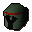
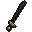
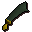
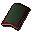
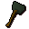
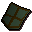
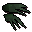

Adamantite bar
| Config name | adamantite_bar |
| Item id | 2361 |
| Value | 640 gp |
| Weight | 72oz |
| Members | No |
| Tradeable | Yes |
| Stackable | No |
| Defined in | scripts/skill_smithing/configs/smelting/smelting.obj |
Adamantite bar
It's a bar of adamantite.
How to make
| Skill | Level | XP | Ingredients | Tool | How | Where | Makes |
|---|---|---|---|---|---|---|---|
| Smithing | 70 | 37.5 | interface | furnace | 1 smelting |
Used to make
| Skill | Level | XP | Ingredients | Tool | How | Where | Makes |
|---|---|---|---|---|---|---|---|
| Smithing | 70 | 62.5 | interface | anvil | |||
| Smithing | 71 | 62.5 | interface | anvil | |||
| Smithing | 72 | 62.5 | interface | anvil | |||
| Smithing | 73 | 62.5 | interface | anvil |  Adamant med helm | ||
| Smithing | 74 | 62.5 | interface | anvil | |||
| Smithing | 74 | 62.5 | interface | anvil |  Adamant sword | ||
| Smithing | 75 | 62.5 | interface | anvil | |||
| Smithing | 75 | 125.0 | interface | anvil |  Adamant scimitar | ||
| Smithing | 76 | 125.0 | interface | anvil | |||
| Smithing | 77 | 125.0 | interface | anvil | |||
| Smithing | 77 | 62.5 | interface | anvil | |||
| Smithing | 78 | 125.0 | interface | anvil |  Adamant sq shield | ||
| Smithing | 79 | 187.5 | interface | anvil |  Adamnt warhammer | ||
| Smithing | 80 | 187.5 | interface | anvil | |||
| Smithing | 81 | 187.5 | interface | anvil | |||
| Smithing | 82 | 187.5 | interface | anvil |  Adamant kiteshield | ||
| Smithing | 83 | 125.0 | interface | anvil |  Adamant claws | ||
| Smithing | 84 | 187.5 | interface | anvil | |||
| Smithing | 86 | 187.5 | interface | anvil | |||
| Smithing | 86 | 187.5 | interface | anvil | |||
| Smithing | 88 | 312.5 | interface | anvil |
Dropped by
| NPC | Level | Quantity | Rarity | Via | Notes |
|---|---|---|---|---|---|
| 276 | 1-2 | 5/128 (3.91%) | |||
| 227 | 1 | 3/128 (2.34%) | |||
| 172 | 1 | 1/64 (1.56%) | |||
| 152 | 1 | 1/128 (0.78%) |
Referenced in scripts
scripts/_test/scripts/cheats/cheat_bank.rs2scripts/areas/area_wilderness/scripts/king_black_dragon.rs2scripts/drop tables/scripts/black_demon.rs2scripts/drop tables/scripts/black_dragon.rs2scripts/drop tables/scripts/red_dragon.rs2scripts/skill_smithing/scripts/smithing/smithing.rs2